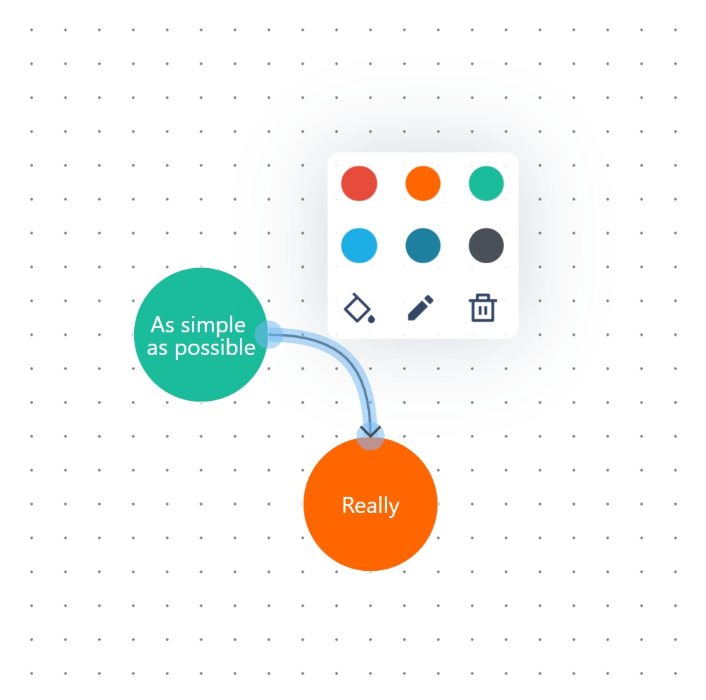
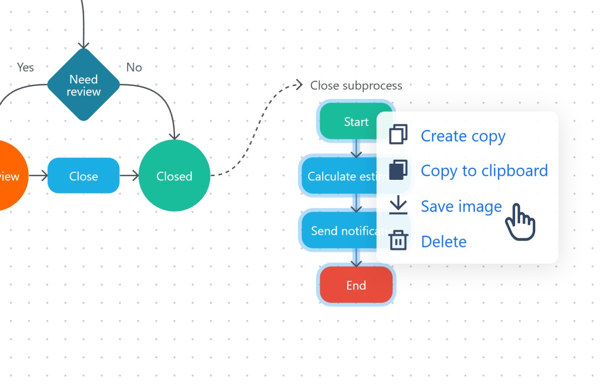
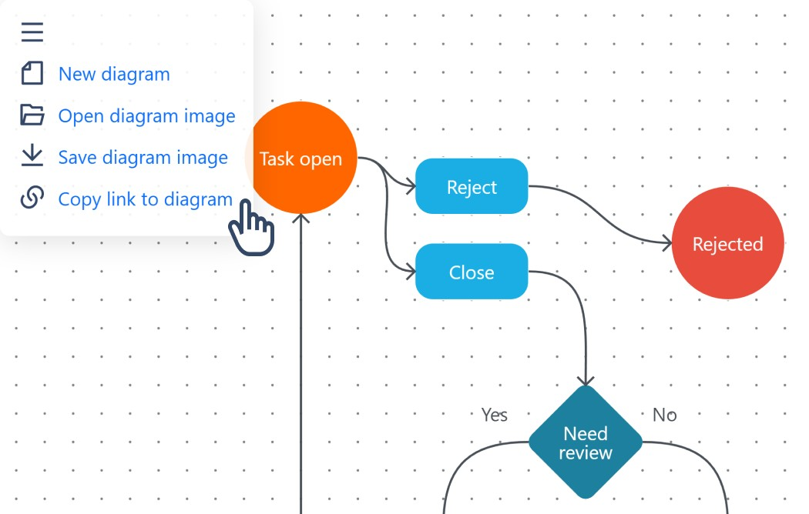
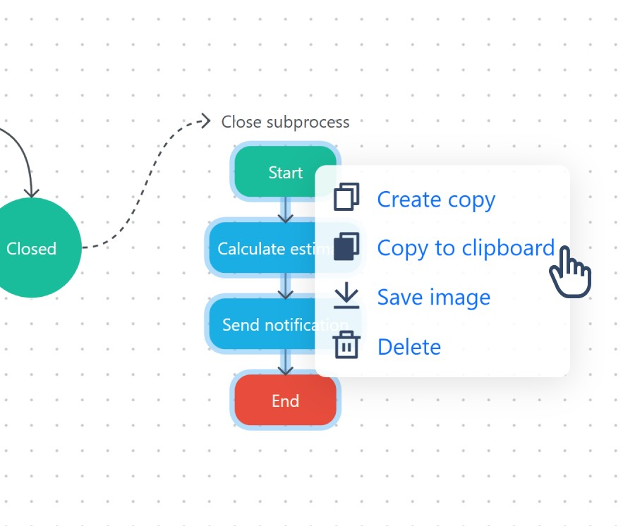
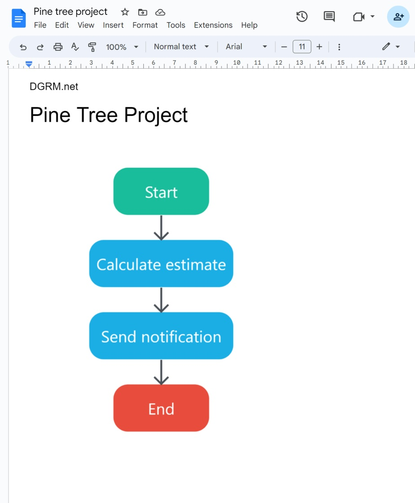
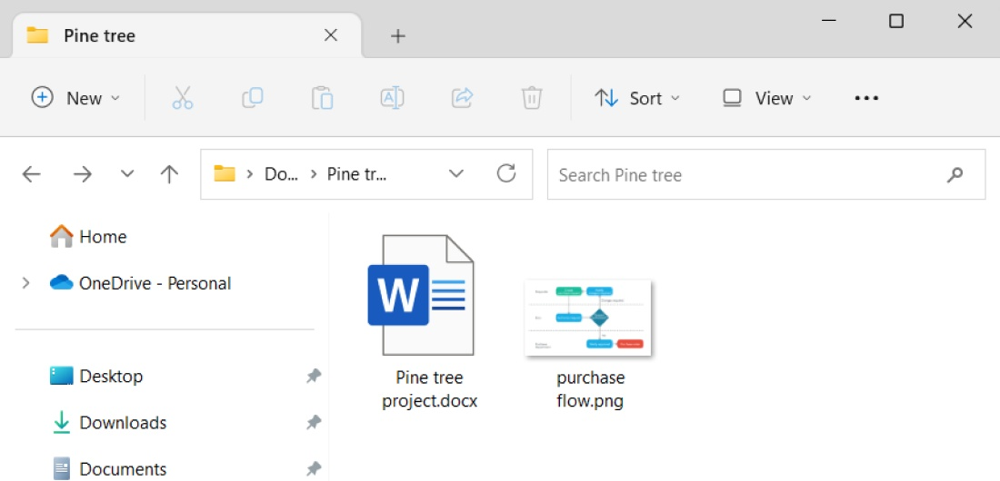
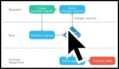
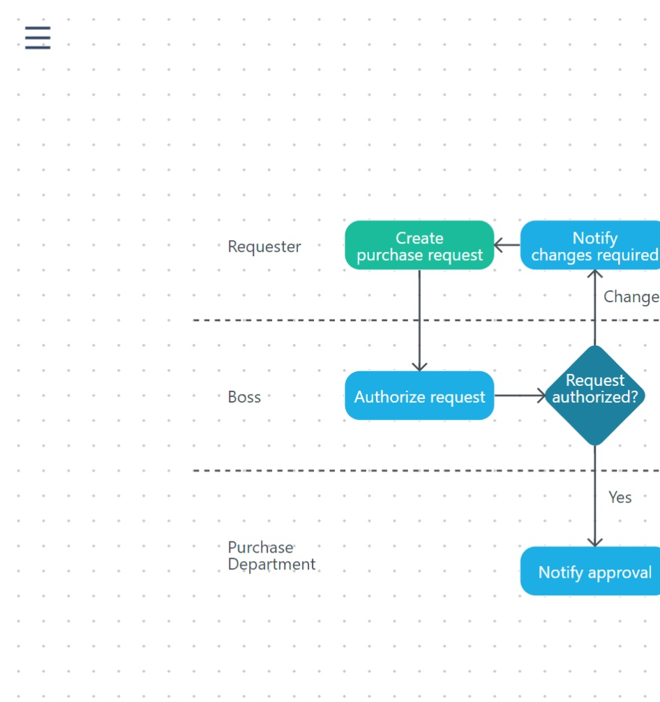

DGRM редактор схем
Редактор схем
Онлайн-редактор для рисования схем.
Быстрый, без лишних кнопок.
Бесплатно, без регистрации
Поддерживает популярные схемы
Схемы рабочих процессов, диаграммы активностей, диаграммы последовательностей, карты знаний.
Особенности редактора
-
 -
Нет лишних кнопок
Подходит всем. Рисование по клеточкам. Криво не получится, элементы сами выравниваются по сетке.
-
Работает на телефонах, планшетах и пк
Не нужно устанавливать. Работает в браузере.
-
-
Можно выгрузить часть схемы
 -
Ссылки на схемы
Отправляйте ссылки на схемы коллегам -
Копирование в Word
Вставляйте схемы сразу в Word и Google Docs без промежуточного сохранения картинок
  -
Открывает схемы из картинок
Не нужно хранить исходники. Например: посылаем схему по почте. Через месяц письмо возвращается - сразу правим картинку из письма, не ищем исходники
  
Бесплатно,
без регистрации
Начните использовать редактор бесплатно и без регистрации.